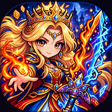
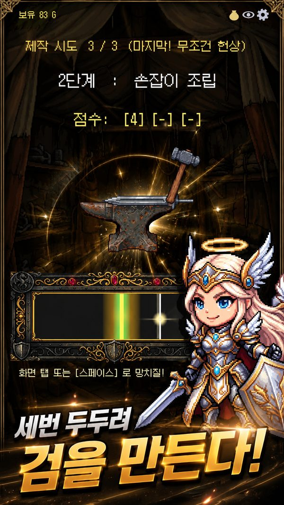
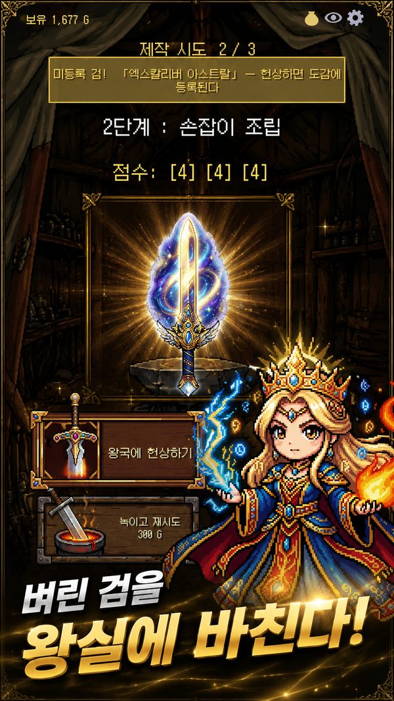
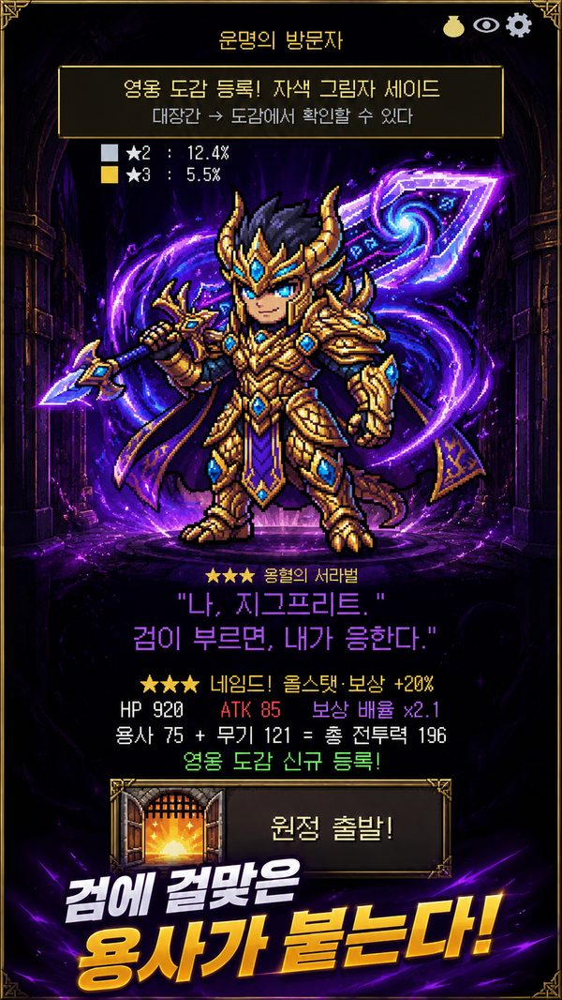
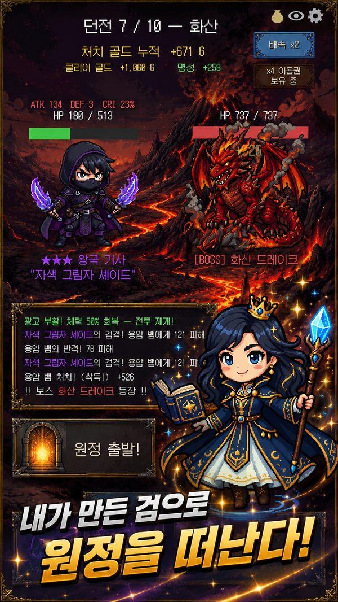
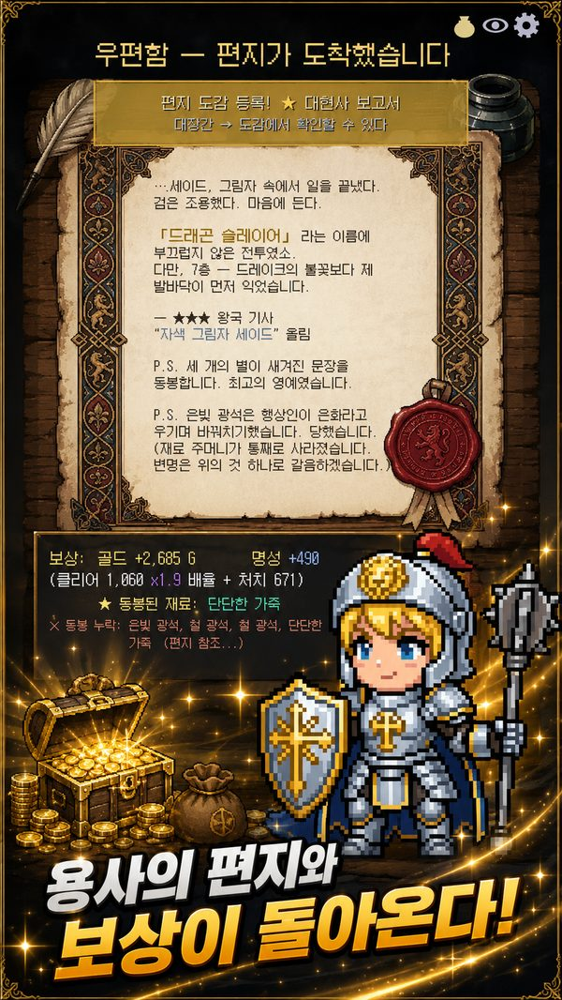

망치 세 번으로 검이 정해진다. 벼린 검을 왕실에 바치면 용사가 찾아오고, 그 검을 들고 던전으로 떠난다. 마신을 베면 엔딩이 있다 — 그리고 그 너머, 스무 번째 계단까지.





자동이 아니다. 바늘이 지나는 순간을 잡아야 대성공. 3연속이면 12점 신화검.
검의 격에 따라 무명 용사부터 별 붙은 네임드, 유니크까지. 도감과 편지가 쌓인다.
켜 둔 시간이 아니라 손의 실력. 마신런·정복런이 격주로 열리고 칭호가 남는다.
심연의 마신을 베면 이야기가 끝난다. 용사마다 다른 결말, 여덟 개의 엔딩.